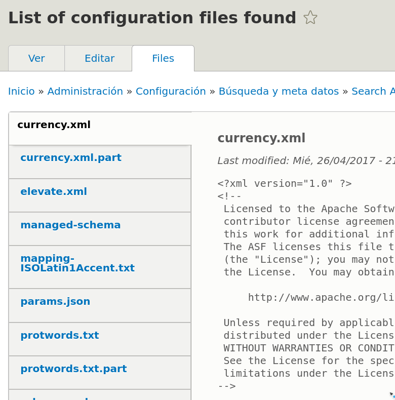

Vamos a hablar de:
"Contrib Search maintainers are committed to make Drupal 8 kick ass with Search API."
|
Thomas Seidl |
Nick Veenhof |
Markus Kalkbrenner Thomas Seidl mkalkbrenner Andrei Mateescu Sascha Grossenbacher nickveenhof Mattias Michaux drunkenmonkey git Florian Weber Nick Veenhof berdir Christian Spitzlay borisson_ blazey chabby ekes janusman jsacksick Ismaeil Abouljamal Tobias Stoeckler TuWebO darthsteven daspeter drunken-monkey fago larowlan mollux snufkin Abouljamal Aurelien Navarre Hydra Monique Szpak NiteshP Steven Jones The Great Git Migration andrewbelcher andypost ayalon bdecarne cferthorney corvus_ch cspitzlay daeron danquah dasjo deciphered derhasi dwikoff febbraro feyp guillaumev heykarthikwithu ianmthomasuk izus jhedstrom jiff jlapp jonhattan jsteggink jwilson3 kenorb klausi kotnik marthinal mbovan nickvh oknate pfrenssen populist prics sardara sch4lly swentel thegreat umed_singh
|
26 Abr 2017 - Official stable release Search API - 8.x-1.0
| 2017 | Search API in Drupal 8 is about to be stable! |
|---|---|
| 2016 | Add support for extract to Connector API Integra distintas "configuraciones" en Search API Solr |
| Battleplan for Search & Solr in Drupal 8 Acquia invierte esfuerzo para unificar el módulo Search API |
|
| 2013 | Kicking off the Search API D8 port (again) in Szeged ¡Cogemos fuerzas de nuevo! |
| (Solr) Search in Drupal 8 Search del core, Query classes, Index logic... |
|
| Change workflow plugin system Unify processors and data alterations, datasources, service classes into proper plugins |
|
| 2012 | Solr Wizardry at Dev Days Barcelona 2012 Colaboración entre mantenedores |
Empieza por la Documentación
https://www.drupal.org/docs/7/modules/search-api
 |
https://www.drupal.org/docs/8/modules/search-api |

https://www.drupal.org/docs/8/modules/search-api/extension-modules
쮼n qué filas sale y cuátas veces?
A
A E
C K N
A R F O
V P G X D
R E A F K O
N V K V O A Z
N P H T A N X U
X D F H P T Z A N
F A X T D N H U P Z
Search API Solr y Drupal lo hacen muy bien "Out of the box", pero pequeñas diferencias en la configuración importan.
Análisis léxico, morfológico y relevancia
"쮿ay huevos fritos con papas?"
🡓"huevos fritos papas patatas"
🡓| "huev frit pap" | "huev frit patat" |
Debes tener instalado un servidor Solr, el módulo search (/admin/modules) del core desinstalado, módulo Search API Solr instalado (composer)
Paso 1
Paso 2

Paso 3
:8983/solr/#/~cores/tapas_bar |
/admin/config/search/search-api/add-server |
Paso 4
:8983/solr/#/tapas_bar/files |
admin/config/search/search-api/server/experimental_solr_server/files  |
Paso 5

Paso 6

Paso 7

Paso 8
Paso 9
Resumiendo mucho...

Estamos en un punto intermedio, vamos a añadir la información que queremos indexar
Esta información viene en forma de propiedades, por ejemplo campos del nodo (Content) o campos añadidos por procesadores (General)
Añadimos uno (o más) campos por cada propiedad
Paso 10
Seleccionamos un tipo y un boost.
@NOTE: Hemos indexado el campo títle del nodo dos veces, lo vamos a almacenar como tipos distintos (string y text)
Paso 11
Antes de nada, puedes activar el módulo Devel y comprobar cómo se van a mapear los campos que has añadido.
[TIPO][CARDINALIDAD]_[MACHINE_NAME]
Paso 12
Activar los menos posibles. Algunos pueden interferir con "procesadores" de Solr.
Por lo general los procesadores, añaden "propiedades" o alteran los valores de los campos (en distintas etapas del proceso)
Paso 13
Todo esto @borisson_ lo hace en 47 segundos ;)
Si activas el módulo search_api_solr_defaults parte de la configuración la tienes hecha. Incluyendo una vista por defecto.
:8983/solr/#/my_core/files
|